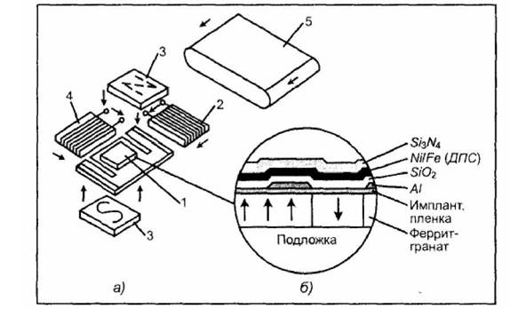

электронный
ресурс по учебной дисциплине 1-58 01 01 - "ИНЖЕНЕРНО-ПСИХОЛОГИЧЕСКОЕ ОБЕСПЕЧЕНИЕ ИНФОРМАЦИОННЫХ ТЕХНОЛОГИЙ"
|
||
| Оглавление | Программа | Теория | Практика| Контроль знаний | Об авторах | ||
Тема 3
Магнитоэлектронные приборы и устройства
1. Физические основы функциональной магнитоэлектроники.
Физические основы функциональной магнитоэлектроники. Функциональная магнитоэлектроника представляет собой направление в функциональной электронике, в котором изучаются магнитоэлектронные эффекты и явления в магнитоупорядоченных континуальных средах, а также возможность создания приборов и устройств обработки и хранения информации с использованием динамических неоднородностей магнитоэлектронной природы. Магнитное упорядочение заключается в существовании определенной закономерности расположения элементарных магнитных моментов атомов, ионов, электронов. Простейшие типы магнитного упорядочивания наблюдаются в ферри- и ферромагнетиках. Ферромагнетик представляет собой вещество, в котором ниже определенной температуры (точки Кюри) большинство атомных магнитных моментов параллельно друг другу и вещество обладает самопроизвольной (спонтанной) намагниченностью. Под ферримагнетиками понимают магнетики с несколькими магнитными подрешетками и с отличным от нуля суммарным магнитным моментом. Магнитное упорядочивание в любых классах магнетиков исчезает при температуре выше точки Кюри для ферромагнетиков и точки для ферри- и антиферромагнетиков.
2. Динамические неоднородности в магнитоэлектронике.
Динамические неоднородности в магнитоэлектронике. В континуальных магнитоупорядоченных средах существует несколько видов физических носителей информационного сигнала — динамических неоднородностей. Цилиндрические магнитные домены (ЦМД) представляют собой изолированные однородно намагниченные подвижные области в ферро- или ферримагнетиках. ЦМД, которые имеют форму круговых цилиндров и направление намагниченности, противоположное направлению намагниченности магнетика. ЦМД возникают при определенных условиях в тонких монокристаллических пластинках или пленках ферритов, обладающих сильной одноосной перпендикулярной анизотропией. Единственная ось легкого намагничивания направлена перпендикулярно поверхности континуальной среды, в которой формируются динамические неоднородности в виде ЦМД (рис. 3.1). Устойчивое равновесие ЦМД поддерживается под действием трех сил: сжимающей силы со стороны внешнего магнитного поля, магнитостатической силы растягивания домена за счет "магнитных зарядов", сжимающей силы поверхностного натяжения домена. Изолированный домен существует в определенном интервале значении внешнего поля
(3.1)
где Hmin — поле, при котором ЦМД растягивается в полосовой домен, Hmax — поле, при котором ЦМД схлопывается — коллапсирует. Значение этих полей зависит от отношения толщины щелки к ее характеристической длине.
ЦМД можно перемещать в пленке воздействия на него полем. Скорость перемещения определяется соотношением
(3.2)
где DНвн — изменение напряженности внешнего поля на расстоянии, равном диаметру домена, m— подвижность домена, Нс — коэрцитивная сила материала. Переход вектора намагниченности из одного положения в другое происходит на границе раздела между двумя доменами. Эта граница или переходной слой называется доменной границей, и различают следующие их типы. Неелевекая граница существует в очень тонких магнитных пленках (менее 30 нм). Вектор намагниченности ориентирован по оси легкой намагниченности (ОНЛ), поворот атомных магнитных моментов в границе происходит только в плоскости пленки. Елоховская граница существует в пленках толщиной более 100 нм и во всех массивных ферромагнетиках. Разворот магнитных моментов возможен как по часовой (правовинтовая граница), так и против часовой стрелки (левовинтовая граница). Особенностью блоховской доменной границы является отсутствие на ее краях магнитных зарядов. Промежуточным типом является граница с поперечными связями, существующая в пленках толщиной от 30 до 100 нм. В настоящее время значительный интерес представляют вертикальные блоховские линии (ВБЛ) в полосовых доменах. ВБЛ являются одним из типов динамических неоднородностей и на их основе созданы приборы для обработки и хранения информации. В двоичном исчислении логические "0" и "1" образуются наличием или отсутствием ВБЛ. Расстояние между соседними ВБЛ достаточно мало, поэтому в стенке одного такого полоскового домена можно хранить множество битов информации. В полосовом домене размером 0,5 мкм можно хранить до 100 бит информации. Динамические неоднородности в виде ВБЛ, переносящие или хранящие биты информации, считываются на одном конце полоскового домена и генерируются (записываются) на другом (рис. 3.2). В оптических дисках со стиранием и перезаписью информации используются домены в дисках из тербий-железо-кобальтового сплава с точкой Кюри 240 °С. Домены первоначально ориентированы в одном направлении (рис. 3.3, а).
1 — в пленке феррита-граната; 2 — ЦМД; 3 — стенка Блоха; 4 — вектор намагниченности соседнего домена; 5— вектор намагниченности домена; 6 — поле рассеяния домена
Рисунок 3.1 – Изолированный ЦМД
При воздействии лазерного излучения происходит локальный разогрев до точки Кюри (рис. 3.4, б). Если в этом месте действовать магнитным полем, то можно обратить поляризацию домена (рис. 3.3, в). Заметим, однако, что такие динамические неоднородности превращаются на определенное время в статические.
В функциональной магнитоэлектронике в качестве динамических неоднородности часто используются резонансы и волны.
В квантовых системах под резонансом будем понимать резкое возрастание квантовых переходов при равенстве частот внешнего излучения hv и квантового перехода ei – ej
(3.3)
Явление резонанса проявляется в увеличении интенсивности обмена энергией в процессах поглощения и излучения. Механический момент каждого магнитного иона в ферромагнетике (спин) совершает прецессию под воздействием поля Нупр), перпендикулярного внешнему Нвн. Величина прецессии определяется ларморовской частотой. В реальной ситуации магнитные моменты ионов в ферромагнетике взаимодействуют между собой благодаря дипольным полям, обмену энергией, взаимодействию с полем кристаллической структуры.
Возникают объемные магнитостатические волны (ОМСВ) и поверхностные магнитостатические волны (ПМСВ). Магнитостатические волны представляют собой электромагнитные волны, сопровождающие колебания спинов в магнитоупорядоченных средах.
Рисунок 3.2 – Фрагмент полосового домена с тремя парами ВБЛ, представляющие собой логические единицы
Рисунок 3.3 – Динамика обращения домена в оптическом диске
Фазовая скорость магнитостатических волн много меньше скорости света. Магнитостатические волны возбуждаются неоднородным магнитным полем, создаваемым током, протекающим по проводнику на поверхности пленки. На рис. 3.4 представлены два состояния ионов во внешнем магнитном поле Нгм: в отсутствии управляющего поля Нупр спины выстраиваются вдоль направления постоянного поля (рис. 3.4, а); при наложении управляющего поля Н, например, за счет протекания тока по проводнику, создается спиновая волна, распространяющаяся по пленке и являющаяся динамической неоднородностью (рис. 3.4, б). Характер распространения возмущения напоминает движение одиночной волны по струне, причем увеличение натяжения струны аналогично увеличению магнитного поля Нгир. В обоих случаях наблюдается увеличение частоты. Эти волны называют также спиновыми.
а — в отсутствие управляющего поля; б— при наличии управляющего поля
Рисунок 3.4 – Возникновение динамической неоднородности в виде спиновой волны:
Наряду со спиновыми волнами в ферромагнетиках можно возбуждать упругие волны в ультразвуковом диапазоне, электромагнитные волны. Эти волны можно рассматривать как динамические неоднородности, между которыми могут возникать процессы взаимодействия в случае, если они распространяются одновременно. Взаимодействие упругих и спиновых волн, например, представляет собой магнитострикционную связь, которая позволяет изменить свойства волн вблизи точек синхронизма и образовать гибридную магнипюупругую волну (МУВ). Фазовые скорости таких волн выше скорости звука. Если рассмотреть слоистую структуру ферромагнетик-полупроводник, то спиновые волны в ферромагнитной пленке могут взаимодействовать с электронами проводимости полупроводника. Дело в том, что электрическое поле спиновой волны проникает через границу раздела в полупроводник и создает там переменный ток. Джоулево рассеяние мощности приводит к затуханию волны. В случае приложения поля к полупроводниковой пленке в ней возникает электрический ток, носители приобретают упорядоченное движение. На эти носители действует сила Лоренца, возникающая вследствие проникновения в полупроводник магнитного поля спиновой волны. В случае совпадения скорости упорядоченного движения носителей VH в полупроводнике и фазовой скорости спиновой волны VP сила Лоренца колеблется в противофазе с силой электрического поля волны. При этом, если VH < VP, то происходит ослабление спиновой волны; если VH = V, то не наблюдается поглощение спиновой волны и, наконец, если Vu > VP, то происходит усиление спиновой волны или магнитоакустический резонанс. Это яркий пример взаимодействия динамических неоднородностей различной физической природы в различных континуальных средах. Магнитоакустический резонанс возникает на частотах 1—102 ГГц.
В магнитоупорядоченных средах можно возбудить динамические неоднородности в виде магнонов — квазичастиц, представляющих собой квант колебаний спиновых волн. В твердых телах, находящихся в сильном магнитном поле Нт , возникают волны плазмы. Эти волны имеют круговую поляризацию, их называют спиральными волнами или геликонами. Геликоны в процессе распространения взаимодействуют с фотонами и при совпадении частоты звука с частотой колебаний плазмы возникают смешанные колебания. В этом случае наблюдаются явления возбуждения звуковых колебаний колебаниями плазмы и наоборот. В достаточно однородных сверхпроводниках II рода могут быть возбуждены магнитные вихри или вихри Абрикосова. Магнитный вихрь представляет собой нить нормальной фазы, окруженную экранирующим током. Вдоль оси такой нити проходит квант магнитного потока или флуксон, величина которого определяется как
(3.4)
Прикладывая к вихрю внешнюю силу (сила Лоренца), можно перемещать вихрь в плоскости пленки. Особый интерес представляет использование флуксонов в пленках высокотемпературных сверхпроводников (ВТСП).
3. Континуальные среды.
Континуальные средыПри выборе континуальных сред руководствуются условием максимальной эффективности возбуждения заданного типа динамической неоднородности. Первые ЦМД приборы изготавливались на редкоземельных ортоферритах с общей формулой LnFeO3. Однако на их основе не могла быть обеспечена высокая плотность записи информации, экономичность приборов.
Наиболее оптимальной средой для создания ЦМД приборов оказались монокристаллические пленки феррит-гранатов (МПФГ), эпитаксиальные пленки феррит- шпинелей. В настоящее время магнитоодноосные пленки ферритов-гранатов, выращенных на намагниченных подложках галий-гадолиниевого граната (ГГГ), не испытывают заметной конкуренции со стороны других материалов.
4. Генерация, детектирование и управление динамическими неоднородностями.
Генерация, детектирование и управление динамическими неоднородностями. Информация в устройствах на динамических неоднородностях, например, типа доменов, кодируется двумя основными способами, наличием или отсутствием доменов в заданный момент времени в заданном месте, либо состояниями границ доменов.
Процесс генерации доменов осуществляется в основном локализацией электромагнитного поля, например, с помощью аппликации в виде петли, по которой протекает ток I (рис. 3.5). При подаче импульса тока будет создано размагничивающее поле Нразм, превосходящее значение рабочего поля Нразм и имеющее противоположный знак. Под аппликацией пленка локально перемагнитится и образуется домен. Другим примером процесса генерации доменов может служить деление зародышевого домена. Если домен зародится, то будет записана логическая единица, в противном случае — логический нуль.
1 — подложка ГГГ; 2 — эпитаксиальная ферритовая пленка; 3 — изолирующая пленка; 4 — аппликация; 5 — ЦМД
Рисунок 3.5 – Генерация доменов с помощью петли тока
Если в качестве динамической неоднородности применяется ВБЛ, то используется растянутый ЦМД или cmpaun-домен (рис. 3.6). Операцию записи производят в следующем порядке: вначале отрицательную ВБЛ, находящуюся в вершине страйпа (рис. 3.6, а), переводят в другое положение (рис. 3.6, б, в). Прилагая к вершине страйпа импульс поля смещения, можно получить пару ВБЛ разных знаков (рис. 3.6, г). Положительную ВБЛ переводят в вершину страйпа (рис. 3.6, д), определяют ЦМД (рис. 3.6, е),- и уничтожают его путем аннигиляции. Итогом генерации является отрицательная пара ВБЛ в вершине страйпа. Наличие пары отрицательных ВБЛ соответствует логической единице, а ее отсутствие — логическому нулю.
Рисунок 3.6 – Запись ВБЛ в накопительный регистр (а, в, г, д, е) и ее считывание (б)
Для других устройств функциональной магнетоэлектроники существуют свои методы генерации, в основе которых также лежит принцип возбуждения полем. В устройствах на пиновых волнах используется проводник с током, токовая петля, а также другие генераторы управляющего магнитного поля. Управление динамическими неоднородностями магнитоэлектронной природы осуществляется различными физическими эффектами и явлениями, связанными с наложением физических полей. По своей природе ЦМД имеют магнитное поле, которое, взаимодействуя с внешним полем, создает силы, перемещающие домен в направлении минимальной интенсивности внешнего поля. Другими словами, домен перемещается в таком направлении, в котором его энергия будет минимальной.
Токовые аппликации, генерирующие магнитное поле, имеют вид петли из металлической пленки (рис. 3.7, а). Направление тока в аппликации таково, что создается поле, противоположное внешнему, и образуется "яма", которая движется в заданном направлении вследствие последовательной подачи импульсов на фазы Ф1, Ф2, Ф3 предпочтение отдается трехактной схеме, чтобы избежать взаимодействия следующих друг за другом доменов, а также возвратного их движения. Тактовые аппликатуры просты, но ненадежны из-за большого количества проводников.
а — с помощью токовых аппликаций; б — с помощью пермаллоевых аппликаций
Рисунок 3.7 – Управление движением ЦМД
Более удобны магнитные аппликации, управляющее внешнее поле в которых создает магнитостатические ямы и барьеры (МСБ) (рис. 3.7, б). В таких конструкциях домен продвигается от аппликации к аппликации, форма которых оптимизируется в конкретном случае и представляет собой доменопередвигающую структуру (ДПС). ДПС является эффективным устройством управления динамической неоднородностью в виде домена. На рис. 4.8 проиллюстрирована идея перемещения ЦМД по классическим 77-образным ДПС в различные моменты времени, связанные с направлением вектора управляющего магнитного поля Нупр. Генерация доменов происходит в генераторе Г, а детектирование в детекторе Д. ДПС могут полностью управлять перемещением и коммутировать ЦМД по любому ранее заданному направлению или каналу. Существуют множество конструкций ДПС, однако, наиболее перспективны ионно-имплантированные ДПС. Для других видов динамических неоднородностей существуют свои конструкции устройств управления, основанные на магнитоэлектрических эффектах и явлениях. Считывание информации сводится к выявлению динамических неоднородностей, несущих логические "0" и "1", и осуществляется в устройстве, называемом детектором. При детектировании динамических неоднородностей используются, как правило, физические процессы и явления, обратные процессам генерации. Это эффекты индукции, магниторезистивный, магнитооптический и т. п. Общие принципы построения детекторов включают ряд положений, среди которых: обеспечение отношения сигнал/шум, достаточного для получения заданной вероятности сбоя; технологическая совместимость детектора, устройства управления и генератора; согласованность детектора с входом усилителя считывания; устойчивость к внешнимвоздействиям.
Детекторы для считывания ЦМД могут быть различной конструкции в зависимости от используемого физического эффекта. Наиболее распространенной является конструкция с использованием шевронных ферромагнитных или токовых проводниковых расширителей ЦМД.
Увеличение площади считывающего ЦМД с помощью расширителя позволяет получить большую величину выходного сигнала. Процесс считывания информации в конструкциях на ВБЛ можно понять из рис. 4.7, б. На пару проводников подается импульс тока, и концы страйпов сближают. Происходит репликация (отделение) ЦМД, которая каналируется в регистр вывода информации и затем детектируется. На конце страйпа сохраняется отрицательная ВБЛ.
Г— генератор; Д — детектор
Рисунок 3.8 – Движение ЦМД по доменопередвигающим структурам.
Детекторы спиновых волн конструктивно практически не отличаются от генераторов и пришедшая к ним МСВ возбуждает в проводнике импульс тока. Детектирование флуксонов осуществляется путем их аннигиляции в детекторе.
5. Приборы и устройства функциональной магнитоэлектроники.
5.1 Процессоры сигналов на ЦМД.
Процессоры сигналов на ЦМД. Уникальные свойства динамических неоднородностей магнитоэлектронной природы позволяют создать весьма эффективные устройства обработки информации. ЦМД как носитель информационного сигнала обладает следующими уникальными свойствами:
- □ домен в процессах сохраняет форму круглого цилиндра: свободно перемещается в двух измерениях;
- управляемо меняет форму, растягиваясь в полосовой домен;
- позволяет перейти к другому физическому носителю информационного сигнала, в том числе многозначному;
- управляемо зарождается или коллапсирует;
- реплицируется, делясь на две части и восстанавливая первоначальную форму и размер;
- визуально и электрически регистрируется;
- дипольно взаимодействует с другими соответствующими цмд.
- учитывая эти свойства цмд, можно выделить следующие отличительные от интегральных схем свойства приборов функциональной электроники:
- управление процессами обработки информации и ее передача физическими носителями по информационным каналам имеет тотальный и синхронный характер;
- компланарность носителей информационного сигнала имеет две степени свободы его передачи и поэтому время обработки информации уменьшается;
- динамические неоднородности в виде цмд при взаимодействии друг с другом неограниченно долго сохраняют свои конечные размеры и количество в системе до, во время и после взаимодействия.
Эти свойства позволяют создать процессоры для обработки дискретной информации. Анализ показывает, что можно создать логические элементы, реализующие следующие функции: повторение, ИЛИ, И, НЕ, исключающее ИЛИ. Эти элементы и их сочетания позволяют обрабатывать функционально полные системы логических элементов. На рис. 5.9 показаны реализации логических элементов с ортогональным и антипараллельным расположением входов.
а — с ортогональным; б — с параллельным расположением входов X1 и Х2
Рисунок 3.9 – Логические элементы на основе ЦМД:
5.2 Процессоры сигналов на МСВ.
Процессоры сигналов на МСВ. Переспективными процессами обработки сигналов в гигагерцевом диапазоне являются линии задержки на магнитостатических волнах. Эти устройства напоминают процессоры на ПАВ.
Конструктивно линия задержки на МСВ реализуется на многослойной структуре, состоящей из прочной подложки (А12О3), тонкопленочной континуальной среды изжелезоиттриевого граната (ЖИГ) и галлий-гадолиниевого граната (ГГГ) (рис. 3.10). Такой "сэндвич" является эффективной континуальной средой. Следует отметить, что тонкопленочная технология производства сред для устройств на МСВ совместима с технологией интегральных схем. В зависимости от свойств среды магнитостатические волны распространяются с дисперсией или бездисперсионно, время задержки на всех частотах одинаково. На рис. 5.10, а представлена бездисперсионная линия задержки. На входной детектирующий микрополосковый преобразователь поступает сигнал, который возбуждает МСВ, несущие с задержкой информацию на выходной генерирующий микрополосковый преобразователь. МСВ с частотой линейно не связаны, поэтому в линиях задержки наблюдается зависимость времени задержки от частоты (рис. 3.10,6). Для компенсации такой зависимости прикладывают магнитное поле, перпендикулярно направленное к пленке железоиттриевого граната (ЖИГ). Используя также две заземленные обкладки, можно изменить параметры распространения МСВ и обеспечить постоянное время задержки в заданном частотном интервале.
Рисунок 3.10 – Линия задержки на МСВ (а) и ее характеристика (б)
В зависимости от направления приложенного поля можно возбудить различные типы волн. При направлении поля по оси z, приложенного перпендикулярно слою ЖИГ, возбуждается прямая объемная волна. Задержка сигнала возрастает с частотой.
При приложении поля вдоль оси х генерируется обратная объемная волна с убывающей зависимостью задержки от частоты. И наконец, при направлении магнитного поля вдоль оси генерируются поверхностные волны, аналогичные ПАВ.
Линия задержки, использующая прямую волну, имеет возрастающую линейночастотную модуляцию (ЛЧМ), а с обратной волной — убывающую. Если спектр сигнала, поступающего в линию задержки, соответствует полосе пропускания этой линии задержки, но имеет противоположный закон изменения задержки с частотой, например, убывающей, то выходной сигнал будет иметь форму узкого пика. Коэффициент сжатия может составлять несколько порядков.
Линия задержки может быть использована в качестве трансверсального фильтра. Известно, что требуемую характеристику фильтра получают путем суммирования и взвешивания выходных сигналов с ряда слабо связанных отводов. С их помощью снимают сигналы, распространяющиеся в линии задержки. Для приборов на магнитостатических поверхностных волнах существует возможность легкого ветвления волны в любых точках тракта распространения.
Заметим, что в зависимости от типа используемых входных и выходных преобразователей, соответственно генераторов и детекторов МСВ, можно получить различные амплитудно-частотные характеристики (АЧХ) преобразования. Преобразователь меандрового типа генерирует АЧХ, описываемую функцией . Преобразователь спараллельными х полосками работает в длинноволновой части спектра и генерирует вдвое больше гармоник, чем меандровая структура. Эти преобразователи легли в основу конструкции трансверсальных фильтров на МСВ, полосковых фильтров.
Устройство преобразования спектра СВЧ-сигналов— серродин представлен на рис. 3.11. Основой конструкции является линия задержки, в которую встроена катушка подмагничивания для модуляции магнитного поля. В качестве континуальной среды использовалась пленка ЖИГ толщиной 10 мкм на подложке из Г Г Г . Серродин работает в диапазоне частот 2—5 ГГц. Для динамической перестройки серродина необходимо изменить магнитное поле на несколько эрстед. Это можно реализовать с помощью малоиндукционных катушек, входящих в устройство управления серродином. Динамический диапазон по входному сигналу составляет 30—50 дБ, величина управляемого сдвига частот от сотых долей до десятка килогерц при искажении спектра частот ~ 5%. Расширение функциональных возможностей приборов на магнитостатических волнах будет обеспечено благодаря использованию эффектов взаимодействия этого типа динамических неоднородностей с акустическими, оптическими и другими типами волн.
1 — пленка ЖИГ; 2 — подложка из ГГГ; 3 — поликоровая пластина; 4 — микрополосковые преобразователи; 5 — модулирующие катушки; 6 — самарий-кобальтовые постоянные магниты
Рисунок 3.11 – Конструкция серродина на МСВ:
5.3 Запоминающие устройства на ЦМД.
Запоминающие устройства на ЦМД. Наиболее широкое применение ЦМД нашли в устройствах памяти, позволяющих получить высокую плотность записи информации, энерго-независимость, малую потребляемую мощность, высокое быстродействие, низкую стоимость. Отсутствие движущихся носителей позволяет ЗУ на ЦМД использовать в бортовых системах. Информационные структуры ЗУ на ЦМД могут быть организованы различными способами. Для ЗУ большой информационной емкости характерна организация последовательно-параллельного типа.
Рассмотрим структуру с раздельными регистрами ввода-вывода информации и накопительными регистрами (рис. 4.12).
Накопительные регистры HP формируются на основе ДПС и информация в них поступав из генератора Г через регистр ввода РВ и однонаправленного переключателя П. Накопи тельные регистры связаны с регистром вывода Рвыв с помощью репликаторов- перерепликаторов-переключателей Р/П, которые при считывании работают в режимах реплицирования. Копии выбранного блока информации из HP попадают в Рвыв а далее в детектор Д. В свободные поля через однонаправленные переключатели записываются новые информационные блоки (рис. 3.12, а). На рис. 3.12,6 приведены схемы операций
обработки информации. Позиция 1 иллюстрирует операцию стирания в Р/П, 2 — запись в однонаправленном переключателе и 3 — считывание в Р/П. В этом случае информация считывается без ее разрушения.
а — с раздельным входом-выходом; б — схема обработки информации
Рисунок 3.12 – Организация последовательно-параллельной структуры хранения информации:
Конструкция ЗУ на ЦМД приведена на рис. 3.13. Микросборка монтируется в корпусе 5 типа DIP. Отдельный чип изготовляется по планарной технологии групповым методом. В последнее время в качестве подложки чипа используется сапфировая подложка. На нее наносится феррит гранатовая пленка, в которой могут образовываться домены. С помощью фотолитографии формируются токовые шины, пермаллоевые (Ni/Fe) доменопередвигающие структуры. ЧИП защищен пленкой нитрида кремния и закрепляется на диэлектрической немагнитной пластине. Два постоянных самарий-кобальтовых магнита 3 создают внешнее поле Нш, формирующее в феррит-гранатовой пленке ЦМД оптимальных размеров. Между постоянными магнитами помещены две ортогональные катушки 2 и 4, управляемые смещенными на 90° по фазе токами. Это позволяет создать управляющее поле Н , вращающееся по часовой стрелке в плоскости ЧИПа: собранная конструкция помещается в корпус со стандартными штырьками, который экранируется от внешнего магнитного поля.
ЗУ на ЦМД формируется в ЦМД-накопитель, состоящий из нескольких ЦМД- микросборок. Последние выполняют ряд сложных функций, среди которых роль носите- носителей записанного информационного массива, обслуживающих электронных схем и узлов для обеспечения замен, считывания и регенерации информации.
Основным элементом ЦМД-накопителя являются ЦМД-микросборки, содержащие в корпусе одну (однокристальные) или несколько (многокристальные) ЦМД-микросхемы, катушки управления полем, постоянные магниты, плату управляющих схем и электромагнитный и электростатический экраны. Повышение плотности записи информации в устройствах на ЦМД-доменах может быть достигнуто за счет уменьшения диаметра домена. На доменах диаметром ~ 1 мкм созданы ЗУ с плотностью записи ~ 10 бит/см2. Разрабатываются устройства с субмикронными размерами доменов.

Рисунок 3.13. Конструкция микросборки ЗУ на ЦМД (а) и структура слоевотдельного ЧИПа (б)
Уменьшения размеров носителя информации можно получить, перейдя на ЗУ на вертикальных блоховских линиях. Информационный массив в этом случае формируется из страйпов.
Канал ввода информации состоит из генератора ВБЛ, доменопередвигающей структуры с числом позиций равной числу страйпов и токовых шин. Эта система осуществляет преобразования типа ЦМД —> ВБЛ.
Канал вывода информации имеет в своем составе систему репликаторов (по числу страйпов), осуществляющих преобразование типа ВБЛ —> ЦМД. Сформированная кодовая последовательность ЦМД направляется в детектор, где происходит считывание информации. Информационная емкость ЗУ на ВВЛ достигает 1,5x10 бит.
Ведутся исследования по созданию "интеллектуальных" ЦМД-ВБЛ систем, в которых на одном кристалле размещены логический процессор и информационный массив. В такой системе можно совместить на одной плате процессы хранения и обработки информационных массивов в реальном масштабе времени со скоростью выше 10ш байт/с.
5.3 Запоминающие устройства на магнитных вихрях.
Запоминающие устройства на магнитных вихрях.Принципы организации ЗУ на магнитных вихрях аналогичны ЗУ на ЦМД. Генератор магнитных вихрей (флуксонов) формирует вихри, находящиеся в состоянии безразличного равновесия. Устройство управления представляет собой схему продвижения вихрей по каналу, осуществляемой силой Лоренца, создаваемую транспортным током (рис. 3.14, а). Однонаправленность движения вихрей обеспечивается асимметрией канала продвижения. Считывание магнитных вихрей может осуществляться с использованием квантовых интерферометров, а также одиночных джозефеоновских контактов.
Возможен вариант формирования сдвигового регистра на магнитных вихрях, либо вари ант мажор-минорной организации. В этом случае реализуется накопитель на магнитны вихрях с параллельно-последовательной организацией записи и считывания информации (рис. 3.14, б). Плотность записи информации в этом случае ожидается ~ 2x108 бит/см2.
Анализ показывает, что скорость обработки информации в этом случае достигает величин ~ 10 бит/с. Буферная или внешняя память на флуксонных запоминающих устройствах технологически и оперативно совместима с микроэлектронными системами и криогенными процессорами.
Рисунок 3.14 – Магнитный вихрь и его канал продвижения (а),мажор-минорная организация ЗУ на флуксонах (б)
| (С) БГУИР |